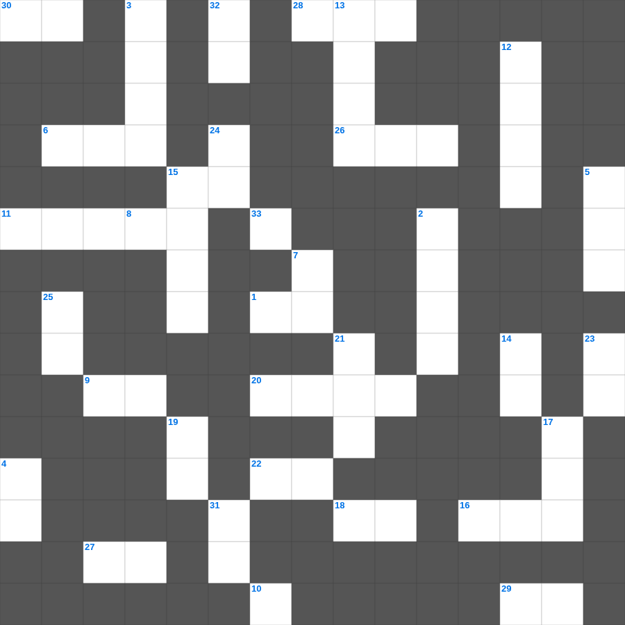

전도서 마스터 100 (1/2)
📌 서비스 정의
십자가로세로는 교회 주보와 주일학교에서 사용할 수 있는 성경 기반 가로세로 퍼즐 서비스입니다. 성경 인물, 사건, 핵심 구절을 바탕으로 제작되었습니다. 온라인 풀이 및 인쇄 기능을 제공합니다.
📖 전도서란?
전도서는 "헛되고 헛되다"는 선언으로 시작하여, 인생의 모든 수고와 즐거움의 허무함을 탐구한 뒤 하나님을 경외하는 것이 참된 결론임을 가르치는 책입니다.
📚 전도서의 주요 사건·주제
인생의 헛됨에 대한 탐구 · 지혜와 쾌락의 한계 · 때를 따라 일어나는 일들(범사에 기한) · 수고와 재물의 헛됨 · 하나님을 경외하라는 결론
오늘은 전도서의 주요 내용을 담은 전도서 낱말 퍼즐를 준비했습니다. 총 35개의 힌트가 있으며, 주일학교 교재나 성경공부 자료로 활용하기 좋습니다. 무료로 즐기는 전도서 가로세로 퍼즐을 지금 바로 풀어보세요!

📝 가로 힌트
1. 주라 그리하면 너희에게 줄 것이니 곧 후히 되어 누르고 흔들어 이것 하도록
6. 요한삼서 1장 10절: 디오드레베가 형제들을 영접하려는 자를 교회에서 어떻게 했나
9. 모든 일을 원망과 이것이 없이 하라
10. 주께서 백성을 애굽에서 구원하여 내시고 후에 믿지 아니하는 자들을 이것하셨으며
11. 처음 익은 열매를 어디로 가져오기로 했나
15. 하나님의 이것을 근심하게 하지 말라 그 안에서 너희가 구원의 날까지 인치심을 받았느니라
16. 남은 채소를 다 먹어버린 여덟 번째 재앙
18. 성막의 성물을 어깨에 메고 운반한 레위의 자손
20. 에스더를 딸처럼 양육한 사촌 오빠
22. 두드리라 그리하면 너희에게 이것을 것이니
26. 무너졌도다 무너졌도다 큰 성 이것이여
27. 보라 그의 마음은 교만하며 그 속에서 정직하지 못하나 의인은 그의 이것으로 말미암아 살리라
28. 제사장 여호야다가 살아있는 동안 성전을 수리하고 선을 행한 왕
29. 하나님은 참으로 이스라엘 중 마음이 이것 한 자에게 선을 행하시나
30. 훔치지 말고 오히려 모든 참된 이것을 나타내게 하라
33. 하나님이여 나를 불쌍히 여기소서 내 영혼이 주께로 이것 하나이다
📝 세로 힌트
2. 우리가 이 직분이 비방을 받지 않게 하려고 무엇에든지 아무에게도 이것하지 않게 하고
3. 그리스도의 은혜로 너희를 부르신 이를 이같이 속히 떠나 이것을 따르는 것을 내가 이상하게 여기노라
4. 삯을 위하여 이 사람의 어그러진 길로 몰려 갔으며
5. 넷째 인을 떼실 때 나온 말의 색깔
6. 너희가 내 형제 중 지극히 작은 자 하나에게 한 것이 곧 이것에게 한 것이니라
7. 능히 너희를 보호하사 이것지 않게 하시고
8. 내가 가진 의는 율법에서 난 것이 아니요 오직 그리스도를 믿음으로 말미암은 것이니 곧 믿음으로 하나님께로부터 난 이것이라
12. 이스라엘이 광야에서 진을 쳤던 장소들을 기록한 장
13. 바울의 변론을 듣고 '네가 적은 말로 나를 권하여 그리스도인이 되게 하려 하는도다'라고 말한 왕
14. 창세기 마지막 장에서 죽은 사람
15. 느부갓네살이 여호야긴 왕을 잡아갈 때 가져간 것
17. 내가 사망의 음침한 이것을 다닐지라도 해를 두려워하지 않을 것
19. 바울이 빌레몬에게 오네시모를 어떻게 대하라고 했나
21. 볼지어다 내가 문 밖에 서서 이것노니 누구든지 내 음성을 듣고 문을 열면
23. 에돔 땅을 돌아가려 하니 백성의 마음이 이것함
24. 하나님께서 구하시는 제사는 상한 이것이라
25. 나를 믿는 자는 성경에 이름과 같이 그 배에서 이것의 강이 흘러나오리라
31. 두세 사람이 내 이름으로 모인 곳에는 나도 그들 이것에 있느니라
32. 요시야 왕이 므깃도에서 전사할 때 싸운 애굽의 왕
🧩 이 퍼즐에서 배우는 내용
이 퍼즐은 전도서 마스터 100 (1/2)의 핵심 단어와 개념을 자연스럽게 복습할 수 있도록 구성되었습니다. 주일학교 수업이나 개인 성경공부에서 학습 내용을 점검하는 용도로 바로 활용할 수 있습니다.
🧑🏫 교회 교육 자료 활용
이 퍼즐은 주일학교 교재 추천 자료로 활용할 수 있고, 주일학교 주보에 넣기 좋은 분량으로 구성되어 있습니다. 수업용 주일학교 교안에 활동지로 붙이거나, 예배 후 복습용 주일학교 공과교재로 바로 사용할 수 있습니다.
🏷️ 키워드
전도서 낱말 퍼즐, 전도서, 십자가로세로, 성경퀴즈, 말씀퀴즈, 가로세로퍼즐, 주일학교 교재 추천, 주일학교 주보, 주일학교 교안, 주일학교 공과교재